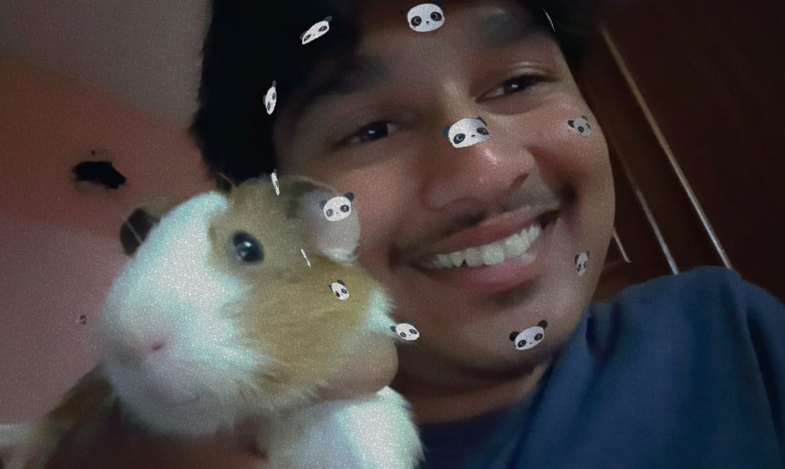

single sentence waste of arguing with him bcz you know the quote
>>>>>>chinese bodhi dharma

Every angle he has it represents a different mental trauma , for that there is no cure so that just we are giving our best efforts to protect him from others beacuse others are good but,He is ILL.I think thats more than enough about his situation
>>>>>>Animal Abuse
He thinks it is funny but to that hamster it is torcher he doesnt leave any species freely.He is an extreme person with all mental disorders like abusing animals hitting the dogs with stones.Even we cant do anything as i said he is mentally ill.
copyright©2025